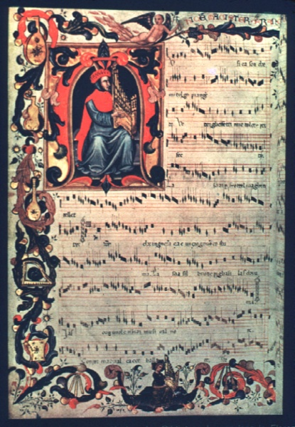

Իտալական երաժշտության պատմություն: Միջնադար.
Դասական երաժշտությունը «երաժշտական արվեստի» բաղկացուցիչ մասն է և հիմնական մասերից մեկը, որն իր արմատներն ունի հին անցյալում: Քանի որ հնարավոր չէ դասական երաժշտությունը համարել առանձին երեւույթ դա երաժշտության վաղ ձևերի զարգացման հաջորդ քայլն է `կլանելով նախկին երաժշտական նվաճումների ժառանգությունը: Իտալիան, որպես եվրոպական քաղաքակրթության զարգացման առաջատար երկրներից մեկը, արվեստի բազմաթիվ ուղղությունների հիմնադիրն է և զբաղեցնում է եվրոպական երաժշտության զարգացման կարևոր տեղերից մեկը:
Պարզ երգեցողություն (ինքնազգացողություն):
Պարզ հոսող վանկարկումն իր ակունքներն ունի հազարամյակի սկզբին:
Մոտ 230-ին ՝ քրիստոնեության արշալույսին, Սբ. Հիպոլիտ Հռոմեացին իր «Առաքելական ավանդույթները» աշխատության մեջ ականատես է եղել Սաղմոսների կատարմանը Հալոմում «Հալլելուա» վերափոխումով:
386 թ.-ին, ընդօրինակելով վանկարկման բյուզանդական մոդելը, Միլանի սուրբ Ամբրոզը (Միլան) գրել է մի շարք շարականներ, որոնցից մի քանիսի տեքստերը պահպանվել են մինչև այսօր, ինչպես նաև ներմուծել սաղմոսների հակաֆոնիկ երգեցողություն Արևմուտքում նրա ստեղծած երգը կոչվում է նրա անունով ՝ Ամբրոզի երգեցողություն:
425 թ.-ին Սելեստին Ա Պապը նպաստեց հռոմեական երկրպագության արարողության զարգացմանը ՝ ներկայացնելով պատասխան երգելու ժանրը ՝ «Աստիճանաբար»: Այս ոճի առանձնահատկությունը երգչախմբային երգեցողությունն էր, որում երգչախումբը և մենակատարը հնչում էին հերթափոխով:
Միևնույն ժամանակ, Բրեշիայի եպիսկոպոսը ՝ Կասիան, հարմարեցրեց եգիպտական վանական վանկերը ՝ օգտագործելու համար ժամերի պատարագին (գրասենյակ):
Ավելի ուշ, մոտ 530-ին, Նուրսիացի Սուրբ Բենեդիկտը, իր «iteեսով», պատվիրեց և որոշեց կանոններ վանական համայնքի համար, ինչպես աստվածային ծառայությունների, այնպես էլ տնտեսական գործունեության մեջ, ներառյալ շաբաթական սաղմոսների երգեցողության կազմակերպումը:
Ավելի ուշ ՝ 6-րդ դարում, հայտնի բանաստեղծ Վենանտյուս Ֆորտունատուսը ստեղծեց մինչ այժմ կատարված քրիստոնեության ամենահիմնական շարականները, ներառյալ «Vexilla regis prodeunt» - ը, որը հետագայում դարձավ խաչակրաց արշավանքների ամենահայտնի օրհներգը:
Գրիգորյան վանկարկում.
Այսօր օգտագործվող ամենավաղ եվրոպական երաժշտությունը Գրիգորյան վանկարկումն է (chorale, cantus planus), մոնոֆոնիկ վանկարկման ոճ, առանց նվագակցման ՝ քրիստոնեական երգեցողություն, որը կատարում են կաթոլիկ վանականները:
Developարգացել է 7-ից 12-րդ դար: Այն իր անունը ստացել է ի պատիվ Հռոմի Պապ Գրիգոր Ա Մեծի, որը սկսեց պարզեցնել եկեղեցական վանկարկումները: Եվ չնայած Գրիգորյան վանկարկումն իր արմատներն ունի հռոմեական վանկարկումում, այն բուն իտալական վանկը չէ. Ֆրանսիան, Իռլանդիան, Իսպանիան և Հռոմեական կայսրության մաս կազմող այլ երկրներ իրենց առանձնահատկությունները նպաստեցին Գրիգորյան վանկարի ձևավորմանը: Կատարողականության տարբերությունները շատ նշանակալի էին և արտացոլում էին ժողովուրդների ազգային, մշակութային և լեզվական ավանդույթները:
Պարզ երգելու մի քանի ավանդույթներ գրեթե միաժամանակ զարգացան Իտալիայում: Միլանում ՝ Ամբրոզում, Հռոմում ՝ հին հռոմեական, Բենեվենտոյում և Մոնտեկասինոյում ՝ Բենեվենտական ծիսակարգում, այս ոճերի տարբերությունները, ի միջի այլոց, պայմանավորված են Հունական Ուղղափառ եկեղեցու երգի ավանդույթների փոխառության աստիճանի հետ: Այնուամենայնիվ, չնայած տարբերություններին, նմանությունները մեծ են:
Գրիգորյան երգեցողությունը, կլանելով երգելու տարբեր ոճեր, աստիճանաբար փոխարինեց դրանք, բացառությամբ Ամբրոզի երգեցողության, որը գոյություն ունի մինչ օրս:
Գրիգորյան վանկը Իտալիայում պաշտոնապես ներդրվել է 1100-ին, չնայած հարավային շրջանները մնացել էին այնտեղ, որտեղ երկրպագությունն իրականացվում էր բյուզանդական ավանդույթների համաձայն: Ի տարբերություն Գրիգորականի, իտալական ժողովրդական երգեցողությունը բնութագրվում է ավելի նեղ տիրույթում գտնվող բազմաստիճան մեղեդիով, սահուն և ալիքավոր և առատորեն զարդարված:
Գվիդո դ'Արեզոյի (Բենեդիկտան վանական, երգի ուսուցիչ, երաժշտության ամենամեծ տեսաբան, որի «Միկրոլոգ կամ համառոտ հրահանգներ Գվիդոյի երաժշտության մեջ» աշխատությունը (մոտ 1020 թ.) Աշխատությունը ներմուծեց լուծման համակարգ ՝ 4 տողանի ձողաձև, որի վրա տեղադրված էին բարձրության տառեր) նորարարությունները: յուրաքանչյուր տող և բանալի): Նրա երաժշտական բարեփոխումը կատարեց տեխնիկական հեղափոխություն երաժշտության ձայնագրման, անգիր և վերապատրաստման արագության մեջ (Գվիդոնի ձեռքը), կարևոր դեր խաղաց կոմպոզիտորի ստեղծագործական զարգացման մեջ և հիմք հանդիսացավ ժամանակակից նոտագրության համար:
Իտալական երաժշտական մշակույթի հաջորդ ծաղկումը տեղի ունեցավ Կատարի խաչակրաց արշավանքի ժամանակ (1209–1229) Ֆրանսիայի հարավում, որի արդյունքում ոչնչացվեց օկտիտական մշակույթը և լեզուն: Աշուղների մեծ մասը խաչակիրներից փախավ Իսպանիա և Իտալիա, որտեղ նրանք նոր շունչ հաղորդեցին երաժշտական ավանդույթներին: Իտալիան ունի իր սեփական աշուղները ՝ տրովատորին:
Հռոմեական Սուրբ կայսր Ֆրեդերիկ II- ը խրախուսում էր երաժիշտներին և իր արքունիքը կանչում աքսորված աշուղներին և տարբեր վայրերից ժամանած այլ երգիչների: Արդյունքում, ձևավորվեց քրիստոնեական, մահմեդական, հրեական երաժշտական ոճերի հալման կաթսա:
Այս ժամանակի իտալական աշխարհիկ երաժշտությունը մարմնավորում էին աշուղները, պարծենկոտները և միմիկաները: Նրանց աշխատանքի հիմնական ձևը մադրիգալն էր (երգ մայրենի լեզվով) - երաժշտության և պոեզիայի մի փոքրիկ կտոր, սովորաբար սիրային և քնարական բովանդակությամբ: Ամենակարևոր ազդեցությունը, որ նրանք ունեցան Եվրոպայում երաժշտության զարգացման վրա, լատիներենից տեղական լեզուների անցումն էր, ինչպես գրավոր, այնպես էլ երաժշտության մեջ: Ողջ Եվրոպայում մարդիկ սկսեցին երգել և երգել իրենց մայրենի լեզվով, Դանթեն իր «Աստվածային կատակերգությունում» 1321-ին ցույց տվեց, որ ընդհանուր իտալերենը (ավելի ճիշտ `« տոսկաներենը »մինչև 1700 թվականը) կարող է լինել լավ գրականության լեզու:
Trecento- ի երաժշտություն (Ars nova):
Տրենցենտոյի շրջանը, մոտավորապես 1300-ից մինչև 1420 թվականը, Իտալիայում ակտիվ գործունեության շրջան էր արվեստի, նկարչության, ճարտարապետության, գրականության և երաժշտության բնագավառներում: Trecento- ի երաժշտությունը բնութագրվում է արտահայտման նոր ձևերի ներդրմամբ, հատկապես աշխարհիկ երգում և տեղական լեզվի `իտալերենի օգտագործմամբ: Այնուամենայնիվ, գերակշռող երաժշտական ձևը շարունակում էր մնալ պարզ երգեցողություն, որը սերտորեն կապված է միջնադարի ավարտի հետ, և, հետեւաբար, երաժշտագետները հիմնականում դասակարգում են Trecento- ն որպես միջնադարյան դարաշրջանի ավարտ:
1317-1319 թվականներին իտալացի կոմպոզիտոր և երաժշտության տեսաբան Մարկետո Պադուական գրեց երեք տրակտատներ. Այս տրակտատներում նա ուսումնասիրեց Գրիգորյան երգեցողությունը և բազմաձայնությունը, քրոմատիզմը, ուրվագծեց ռիթմիկ նոտագրության տեսությունը, որոշեց ռեժիմները և բարելավեց երաժշտական կառուցվածքը: Նրա աշխատանքը ճանապարհ հարթեց Trecento- ի (Ars Nova) երաժշտության համար:
1335-ի սահմաններում ստեղծվեց Rossi Codex- ը `14-րդ դարի երաժշտության ձեռագիր հավաքածու: Այն ժամանակի իտալական աշխարհիկ երաժշտության ամենավաղ և ամենամեծ հավաքածուներից մեկն է: Codex– ը պարունակում է իտալական ժանրի 37 աշխարհիկ աշխատանք, այդ թվում ՝ պոլիֆոնիկ մադրիգալներ և կանոններ և մոնոֆոնիկ բալլադներ: Այս եզակի հավաքածուն հստակորեն ներկայացնում է 14-րդ դարի երաժշտական այս ձևերի փոփոխությունների և դրանց հետագա զարգացման պատմությունը:
Մասնավորապես, այս ձեռագիրն ընդգրկում է հայտնի կոմպոզիտոր Տրեսենտոյի Jacopo da Bologna- ի մի քանի գործեր:
Հանգուցյալ Trecento-ի երաժշտության վերաբերյալ տեղեկատվության ամենամեծ և հիմնական աղբյուրը Squarchalupi- ի նկարազարդ Codex- ն է (1415): Այս ձեռագիրն ընդգրկում է 14-րդ դարի հայտնի կոմպոզիտորների ավելի քան 300 աշխատանքներ և դրանցից յուրաքանչյուրի դիմանկարները: Տրեսենտոյի ժամանակաշրջանի ամենահայտնի իտալացի կոմպոզիտորներն էին Ֆրանչեսկո Լանդինին, Բարտոլինո դա Պադովան, Նիկոլո դա Պերուջիան, Անդրեա դա Ֆիրենցեն, opակոպո դա Բոլոնիան, Լորենցո դա Ֆիրենցը, raերարդելո դա Ֆիորենզը, Դոնատո դա Կասկիան, ovanիովանի դա Կասչիան, Վինչենցո դա Ռիմինին, Պաոլոն da Cascia da Firenze), Giovanni Mazzuoli.
համացանցային պատկերասրահ Squarchalupi Codex
15-րդ դարը ՝ վաղ Վերածնունդը, իտալական երաժշտական արվեստի զարգացման հարաբերական լճացման դար էր:
Քիչ կարկառուն անհատականություններ կային, նրանցից մեկը Լեոնարդո Գուստինյանն է ՝ երաժշտական անթոլոգիայի կատարող և կազմող:
Հյուսիսային հզոր ընտանիքներ, ինչպիսիք են Մեդիչին և Դ'Էստեն, խրախուսում էին արվեստը, և ստեղծագործական շատ անհատներ ծառայում էին նրանց արքունիքում, նրանց թվում էին հյուսիսային ֆրանկո-ֆլամանդական դպրոցի Josquin des Prés- ը և Loise Comper- ի կոմպոզիտորները: 1500-ականների վերջին, իտալացի կոմպոզիտորներ, ինչպիսիք են Մարչետտո Կարան և Բարտոլոմեո Տրոմբակինոն, ստեղծեցին մի քանի ֆրոտոլ (թեթև, նրբագեղ բազմաձայն երգ, սովորաբար սիրային բնույթի): Medici- ի աջակցությամբ գրվեցին բազմաթիվ զվարճալի, սրամիտ կառնավալային երգեր Ֆլորենցիայի Մարդի Գրաս կառնավալի համար (Shrovetide- ի անալոգը):
Ընդհանրապես, միջնադարյան երաժշտության մասին կարելի է ասել. Երգերի բառերի մասին շատ ավելին է հայտնի, քան թե ինչպես են իրականում հնչում, բառերը կարելի էր գրել շատ ավելի հեշտ, քան մեղեդին: Միջնադարի ավարտին բնորոշ է մոնոֆոնիկ երգարվեստից անցումը բարդ մեղեդիական բազմաձայնությանը, որը շրջադարձային էր երաժշտական զարգացման մեջ: